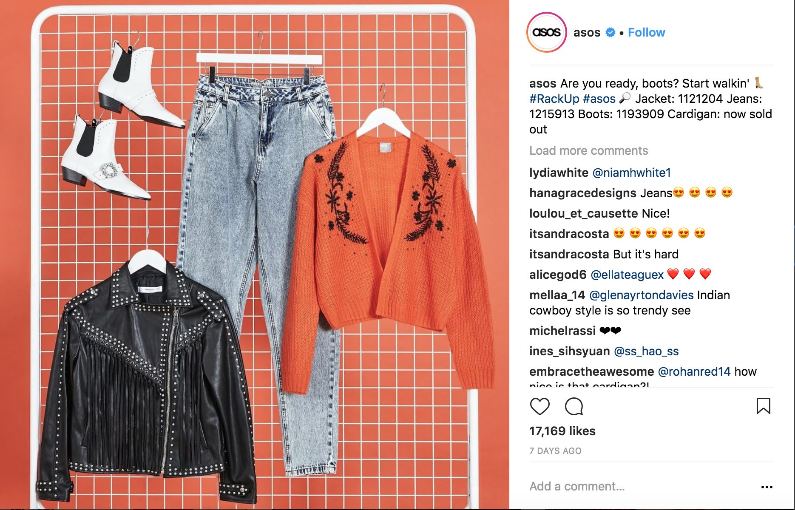
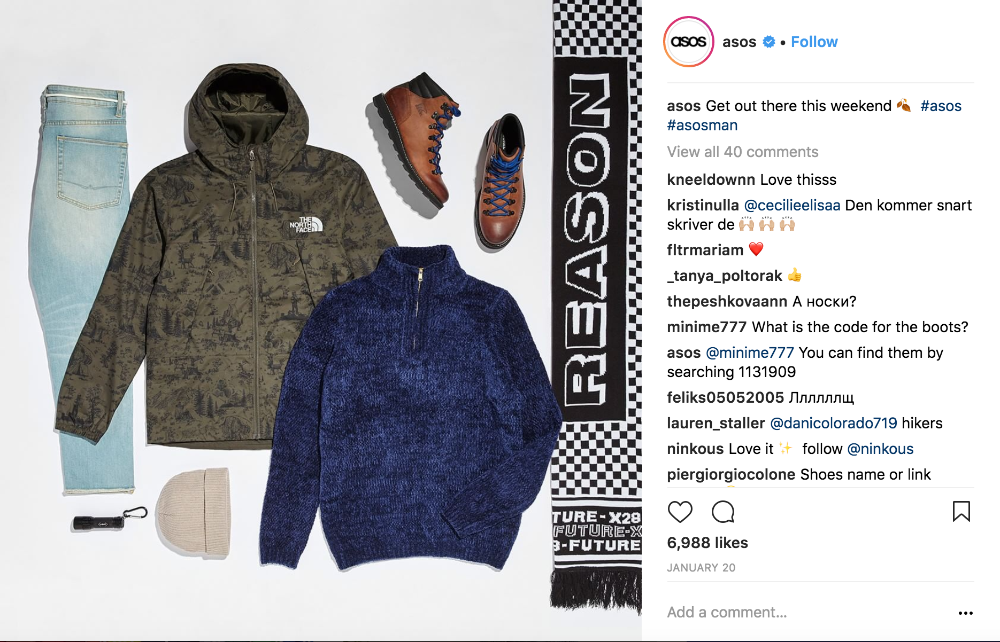

What is Fast Fashion?
The fast fashion industry is big business – and it’s only getting bigger.
Before we go any further – what exactly determines a fast fashion retailer?
Essentially, it is when the production process is accelerated in order to get new catwalk trends into stores or online as quickly as possible. It also reflects the growing consumer desire for speed and value within retail.
It means that, instead of waiting for new seasonal collections (i.e. spring/summer), consumers can get their hands on a continuous cycle of trend-led clothing, all year round.
Brands such as H&M and Zara were said to be among the very first fast fashion retailers. When the latter opened its first US store in 1990 (having first launched in Spain in the 1970s) it announced that it would only take 15 days for a garment to go from concept to completion.
So, what’s fuelling fast fashion brands?
Speed and agility
Hitwise data suggests that ASOS, New Look and Very are the most popular brands in the category, accounting for 47% of the UK’s fast fashion market share.
For brands like ASOS, the ability to capture millennial consumers is key, with this demographic now reportedly having an estimated spending power of $2.45trn. One way it does this is by delivering on the demand for new fashion, as younger consumers typically spend around seasonal events (such as festivals) as well as after payday.
ASOS stocks over 60,000 items at any given time, allowing the ecommerce retailer to constantly update its inventory with ‘new in’ products.
ASOS stocks over 60,000 items at any given time, allowing the ecommerce retailer to constantly update its inventory with ‘new in’ products.


Celebrity endorsement
Hitwise data also shows that PrettyLittleThing.com is the fastest growing brand in the fast fashion category, with the site seeing a whopping 663% increase in online visits year-on-year since 2014.
For PrettyLittleThing, working with celebrities and influencers has allowed the brand to drive awareness of its products. A popular search term relating to the site is ‘celebrities wearing Pretty Little Thing’ – mainly thanks to endorsements from the likes of Kylie Jenner and Sofia Ritchie.
However, Pretty Little Thing does not only use celebrities to merely promote its clothing. Well-known names, like former TOWIE star Lucy Meck, have also created their own clothing lines with the brand.